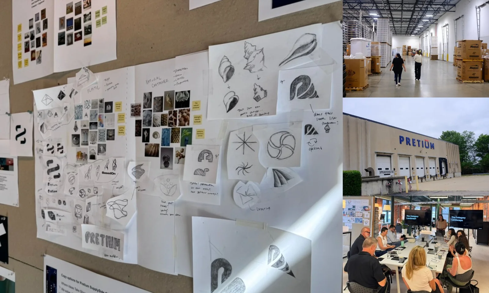
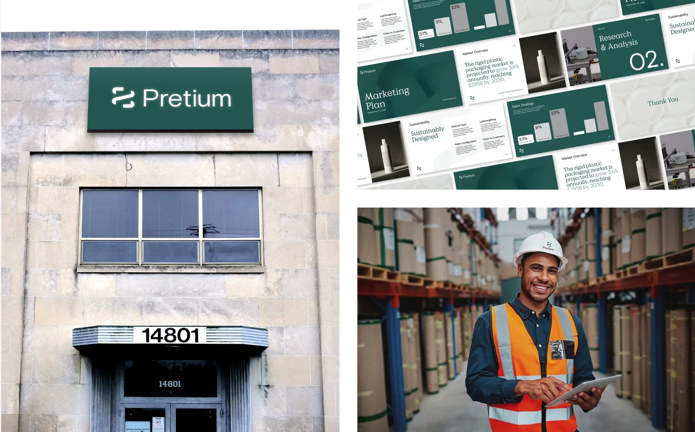
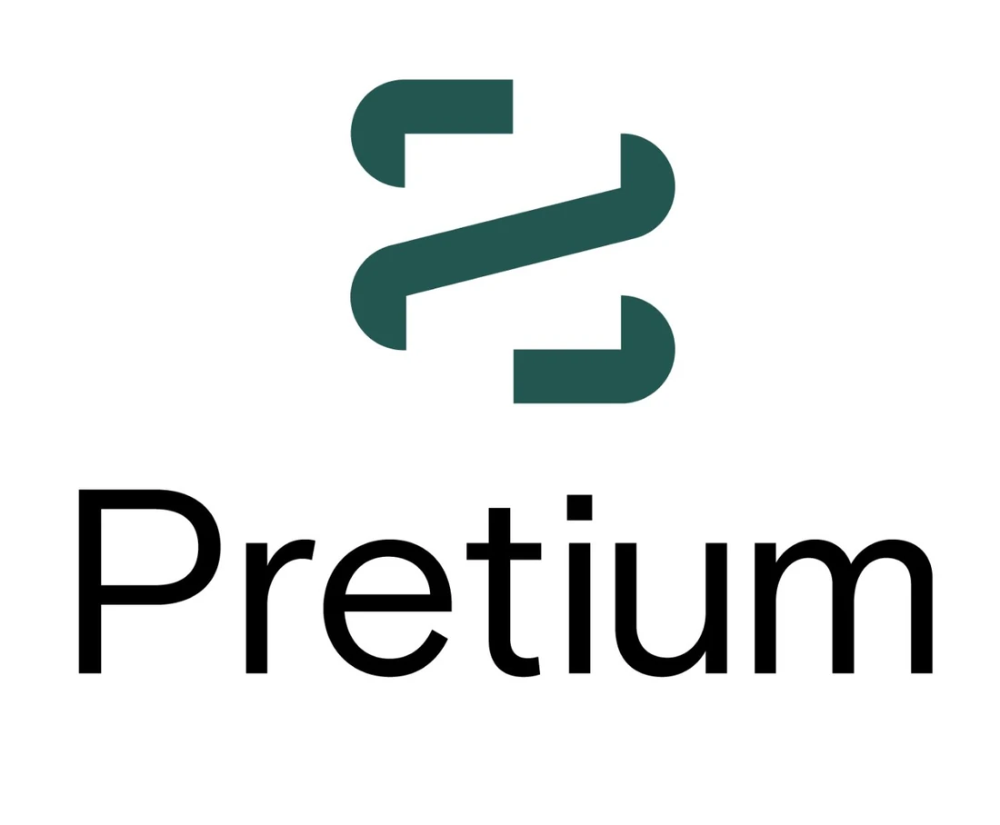
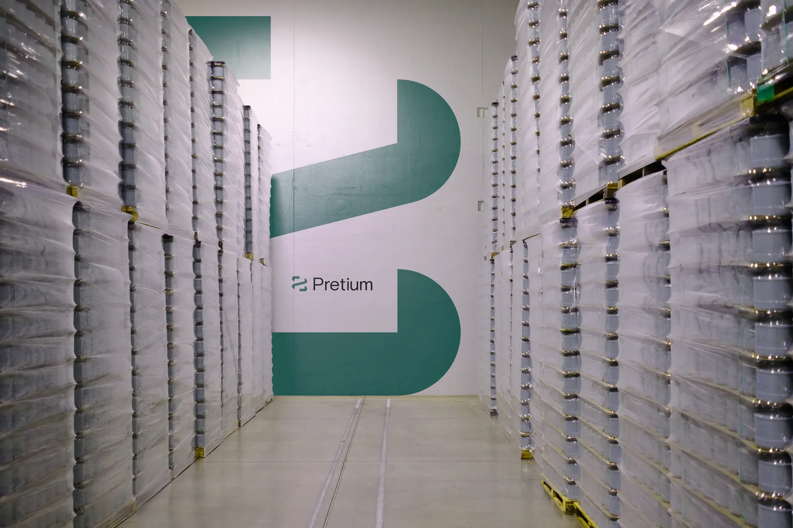
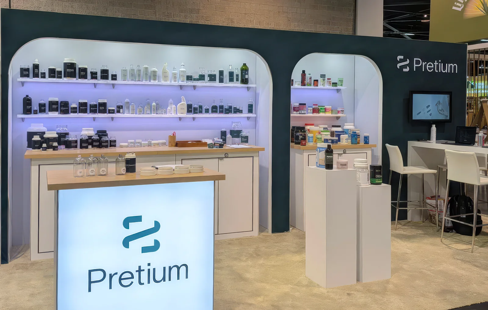

The new Pretium — one brandmark, one story, across the whole organization.

Before & after — the identity evolution.
Evolving a collection of strong, individual rigid-packaging companies into a single, powerful organization with a shared vision for the future.
A brand project from BasedOn, the studio where I work. I was the lead designer on Pretium, working under our creative director, with strategy and copy from the BasedOn strategy and writing teams. All brand work shown belongs to BasedOn and the client, Pretium Packaging.
The new Pretium — one brandmark, one story, across the whole organization.
Before & after — the identity evolution.
Founded in 1990, Pretium Packaging had steadily grown into a leader in rigid-packaging manufacturing, with a footprint of regional and specialty facilities and a roster of B2B clients. But years of growth through acquisition had left it with a collection of strong, separate divisions rather than one unified company.
With new executive leadership and a 2024 goal to align all of its facilities and 2,900 employees behind a shared vision, Pretium needed a brand that could hold that diversity together, reinforce a sense of being one company, and tell a clear, compelling story to its B2B clients. That's the brief the BasedOn team took on.
Diving into Pretium and the rigid-packaging industry, the team looked closely at their shared values and uncovered the company's core purpose: to turn bold visions into reality. From emerging businesses needing speed to market, to niche brands looking for custom growth, Pretium stands out for its ability to navigate complexity with a focus on smaller and mid-sized clients, pairing skilled expertise with the agility to move along with them.

The team gave Pretium a voice built on the confidence of experience, the clarity of foresight, and the drive to move ideas and brands forward. The narrative speaks directly and warmly to clients, anchored in a simple promise that became the heart of the brand.
"We grow with you."
It's a line that reframes a packaging manufacturer as a partner: a steady guide that adapts and changes with its clients, with the diversity to meet any demand and the agility to grow alongside them every step of the way.
The new Pretium brandmark is derived from the cap threads that top every bottle, jar, and canister the company makes. A single, continuous line wraps around a square form, a visual rhythm that speaks to containment, protection, movement, and speed. It evokes Pretium's technical heritage and its adaptable innovation.
The palette evolved to a balance of natural vitality and refined craftsmanship: vibrant cool greens with a warm metallic copper accent for a clean, modern look. The typography embraces bold contrast, large headings paired with smaller, focused supporting text, so every message lands with clarity and confidence.



Eager to put the new identity to work, the team designed and wrote three carousel social posts targeting key client sectors, plus brand-forward messaging and subtle design cues to help Pretium's existing clients recognize the refreshed identity. These posts helped engage clients and gave Pretium's sales team a tool to credential and start conversations.
Pretium publicly launched the full new brand at Natural Products Expo West, with a new on-site product booth that included sample bottles and jars and a looping brand video. Armed with new tools, a dynamic look, and engaging messaging, the team helped Pretium make new industry connections and reconnect with existing clients and employees.

Preliminary results show sustained, organic engagement, with no sign of slowing. Pretium had its story, and a brand bold enough to tell it.